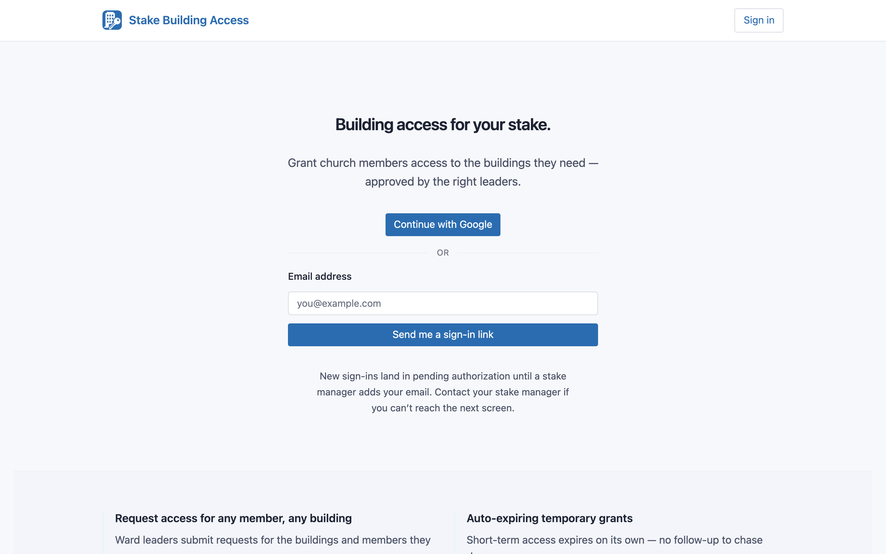
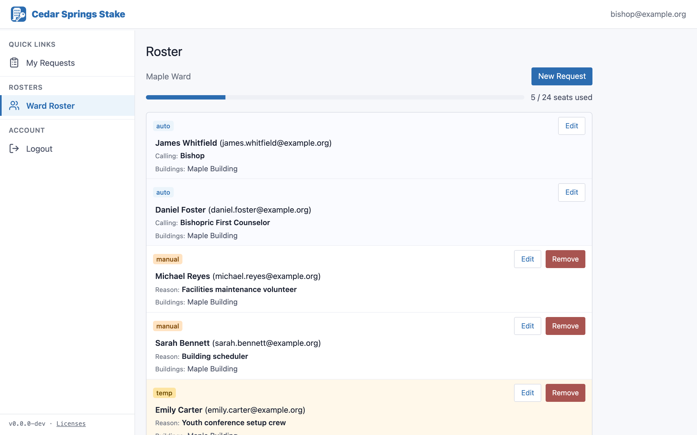
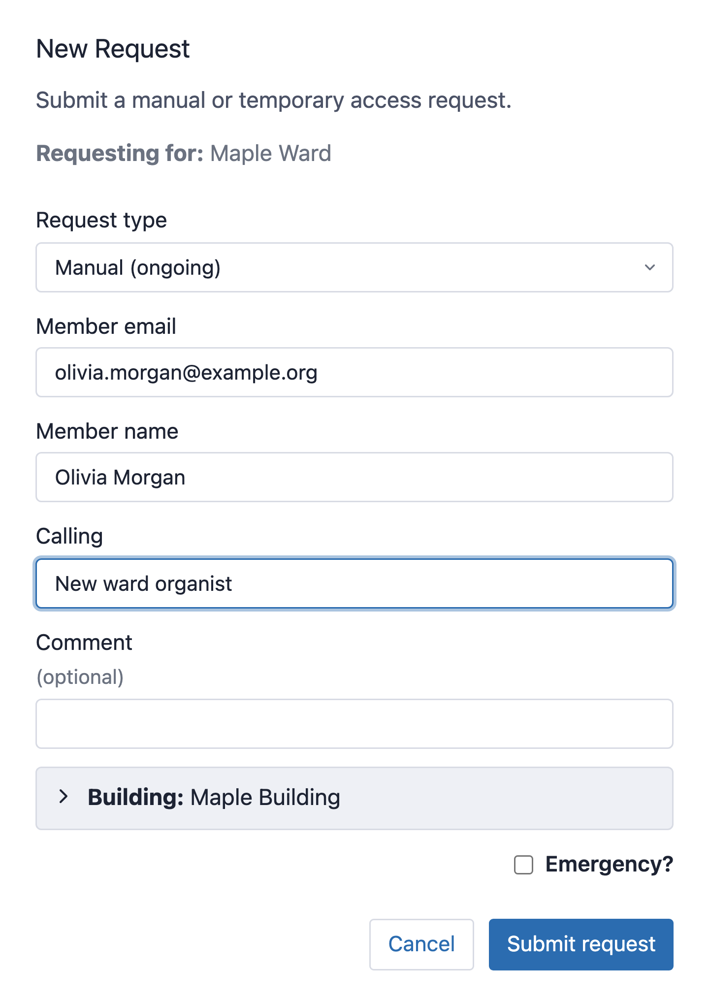
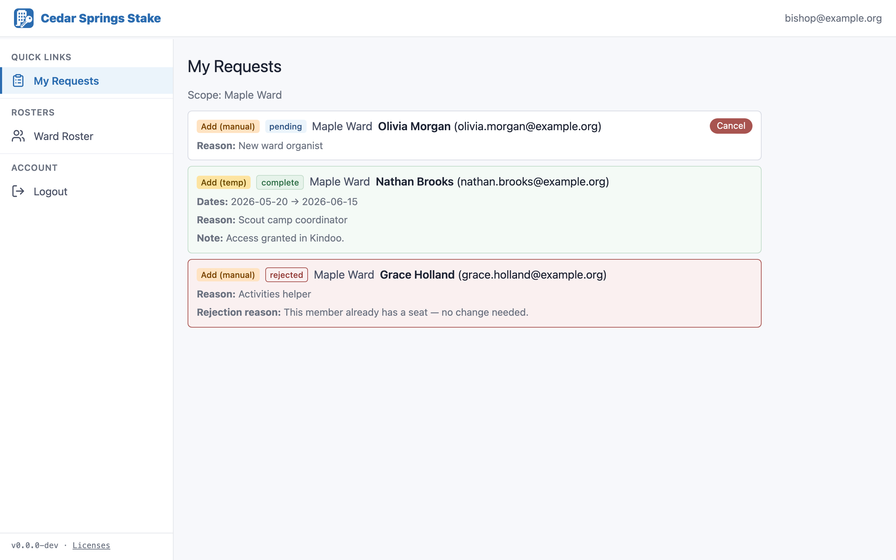

Stake Building Access
Requesting Building Access
A step-by-step guide for Stake Presidencies, Bishoprics, and other stake & ward leaders who request Kindoo door access for members.
Stake Building Access (SBA) is how stake and ward leaders request door access for members in the stake's buildings. You submit a request; a Kindoo Manager grants the access in the door system and marks your request complete. This guide walks you through every part of that process.
1. How building access works
Door access in your buildings is managed by Kindoo, a system that grants each person a "seat" — permission to open specific doors. Your stake has a limited pool of seats, shared across its wards and the stake itself.
Stake Building Access (SBA) is the companion app where leaders request changes to who has access. SBA doesn't open doors itself — instead, your request is reviewed by a Kindoo Manager, who makes the change in Kindoo and then marks your request complete.
The three kinds of seats
| Seat type | Where it comes from | Do you request it? |
|---|---|---|
| Automatic | Tied to a person's calling. When someone is called or released in the Church's systems, their access follows automatically. | No. These appear and disappear on their own as callings change. |
| Manual | Granted to a specific person and kept until someone asks to remove it. | Yes — this is the most common request. |
| Temporary | Granted with a start and end date. Access ends automatically on the end date. | Yes — for short-term needs. |
Who you are in the app
- Stake Presidency and other stake leaders with access (e.g. stake clerk, stake executive secretary) request access against the stake pool.
- Bishopric members (bishop and counselors) request access for their own ward.
You only ever request access for the scope you serve. The Stake Presidency can request for the stake; a Bishopric can request for their ward. If you serve in more than one role, the app lets you switch between them (see Section 3).
2. Signing in
- In your web browser, go to stakebuildingaccess.org.
- Choose how to sign in:
- Continue with Google — sign in with your Google or church-linked Google account in a pop-up. Fastest if your email is a Google account.
- Email a sign-in link — type your email address and click Send me a sign-in link. Open the email and click the link to finish signing in. No password needed.
- The first time you sign in, you'll land on a page that says your access is pending. Once a Kindoo Manager has added your email, you'll see your roster on the next sign-in.

Signing in does not automatically grant you access to the app. A Kindoo Manager must add your email first. If you're newly called, this may take a little time — your access follows once the stake's records have synced. If you're still stuck after a day or two, contact your stake's Kindoo Manager (see Getting help).
Install it like an app (optional)
SBA is a web app, so it works in any browser with nothing to install. If you'd like, you can also add it to your phone's home screen or your computer's dock so it opens in its own window — full-screen, with its own icon, just like a regular app. Installing is optional and doesn't change how SBA works; it only makes it quicker to open.
| Your device | How to install |
|---|---|
| iPhone / iPad Safari | Open stakebuildingaccess.org in Safari, tap the Share button (the square with an upward arrow), scroll down and tap Add to Home Screen, then tap Add. |
| Android phone / tablet Chrome | Open the site in Chrome, tap the ⋮ menu (top-right), choose Add to Home screen (or Install app), then confirm. |
| Windows / Chromebook Chrome or Edge | With the site open, click the install icon at the right end of the address bar (a small monitor with a down arrow). If you don't see it, open the ⋮ menu and choose Install Stake Building Access…, then click Install. |
| Mac Safari or Chrome | Safari: choose File → Add to Dock… Chrome: click the install icon in the address bar, or open ⋮ → Cast, save, and share → Install… |
Menu labels vary slightly by browser version. Once installed, open SBA from your home screen, Start menu, Dock, or app launcher like any other app. To remove it, just delete the icon (on a phone, press and hold it) — the website itself is unaffected.
3. Finding your way around
After you sign in, SBA opens on your Roster — the current list of who has access in your scope. There are three places you'll use:
| Page | What it's for |
|---|---|
| Roster | See who currently has access. This is also where you start every request. |
| New Request | A form (opened from the Roster) for requesting that someone be added. |
| My Requests | Track the requests you've submitted and their status. |
If you hold roles in more than one stake, a stake switcher appears in the top bar. If you have access to more than one ward, a Ward dropdown appears above your roster so you can switch wards. The page always shows the scope you've currently selected.
4. Reading your roster
Your roster lists everyone who currently has access in your scope, grouped by seat type. For each person you'll see their calling (or the reason their seat was granted) and their name.
- Automatic seats show the calling that grants the access. These don't have a remove option — they come and go with the calling.
- Manual seats show the reason the access was granted, and have a remove option.
- Temporary seats show the reason plus the start and end dates, and have a remove option.
At the top, a utilization bar shows how many of your scope's seats are in use compared to its cap.

5. Submitting a request for access
Every request starts from your Roster. The form already knows which scope you're requesting for, so you can't accidentally request against the wrong stake or ward.
- On your Roster, click the New Request button at the top right.
- A form opens, showing Requesting for: your scope (the stake, or your ward). This is fixed — there's no scope picker.
- Choose the request type:
- Add (manual) — ongoing access, kept until removed.
- Add (temporary) — access with an end date (covered in Section 6).
- Fill in the details (see the table below).
- Click Submit. The form closes and your request appears in My Requests as pending.

The fields, explained
| Field | Required? | What to enter |
|---|---|---|
| Request type | Yes | Add (manual) or Add (temporary). |
| Dates | Temporary only | The start and end dates for temporary access. |
| Member email | Yes | The email address of the person who needs access. |
| Member name | Yes | The person's name, for the roster and the manager's reference. |
| Reason | Yes | Why this person needs access (e.g. their calling or assignment). |
| Buildings | Yes — at least one | Tick every building this person should be able to enter. Your ward's building is ticked by default, but you can add or remove buildings. |
| Comment | Optional | Anything else the manager should know. |
| Emergency | Optional | Flag time-sensitive requests so the manager sees them first. |
| Organization | Stake requests only | Assign the seat to a stake organization for reporting. Defaults to "No Organization." |
Every add request needs at least one building selected. The Submit button stays disabled until you've ticked one.
If the person already has access in this scope, the form blocks the request and tells you so. You don't need to add access they already have — check your roster, and if you need to change their existing access, use Change an existing seat instead.
Marking a request as an emergency puts it at the top of the manager's queue with a red marker, so genuinely time-sensitive needs (a same-day event, for example) are handled first. Use it sparingly so it stays meaningful.
6. Requesting temporary access
Temporary access is for short-term needs — a visiting specialist, a one-time event, someone helping for a season.
- Open New Request from your Roster.
- Choose Add (temporary). A date field appears right under the type.
- Set the start and end dates.
- Fill in the member, reason, and buildings as usual, then Submit.
Temporary access ends automatically on the end date — Kindoo turns it off, and the seat drops off your roster on its own. There's no need to submit a removal when a temporary seat expires.
7. Removing someone's access
When someone no longer needs manual or temporary access, you can request that it be removed — directly from the roster row.
- On your Roster, find the person's row. (Removal is available on manual and temporary rows.)
- Click the remove control on that row.
- In the "Remove access for [person]?" dialog, type a required reason.
- Submit. The row switches to a removal pending badge so you don't submit it twice.
Automatic seats follow a person's calling. The way to remove that access is for the calling to end in the Church's records — once it does, the access goes away on its own. There's no remove button on automatic rows for this reason.
8. Changing an existing seat
Sometimes you don't need to add or remove access — you just need to change it. For example, extend a temporary seat's end date, fix the reason, or add another building.
- On your Roster, find the person's row and open its Edit option.
- Change what you need:
- Temporary seats: reason, buildings, and the start/end dates.
- Manual seats: reason and buildings.
- Automatic (ward) seats: you can add buildings, but you can't remove buildings the calling already grants.
- Add a comment (required for edits) explaining the change, then submit.
Like add and remove, an edit becomes a request the Kindoo Manager completes — the change takes effect once they've applied it. Stake-wide automatic seats can't be edited.
9. Tracking your requests
The My Requests page lists everything you've submitted, with its current status:
| Status | What it means |
|---|---|
| Pending | Submitted and waiting for a Kindoo Manager. You can still cancel it. |
| Complete | The manager has made the change in Kindoo. A completion note may be shown. |
| Rejected | The manager declined the request; the reason is shown on the row. |
| Cancelled | You cancelled it before it was processed. |
To cancel a request that's still pending, click Cancel on its row. If you hold more than one role, a scope filter lets you narrow the list.

10. What happens after you submit
- Your request lands in the Kindoo Manager's queue, and they're notified by email (and a push notification if they've enabled it).
- The manager makes the matching change in Kindoo by hand — inviting the person, granting the right doors, or removing access.
- When the Kindoo work is done, the manager marks your request complete and you receive an email.
Because a person does the Kindoo work by hand, access isn't granted the moment you click Submit. Most stakes handle a handful of requests a week. If something is genuinely time-sensitive, mark it Emergency and, if needed, reach out to your Kindoo Manager directly.
11. Frequently asked questions
I signed in but I'm stuck on a "pending" or "not authorized" page.
Creating a sign-in doesn't grant access. A Kindoo Manager has to add your email. If you're newly called, your access follows once the stake's records sync. Contact your Kindoo Manager if it doesn't appear after a day or two.
Why isn't access turned on immediately after I submit?
A Kindoo Manager grants the access in Kindoo by hand and then marks your request complete. See Section 10.
The person already has access — how do I change it?
Use Change an existing seat (edit) or, if it should be removed, the remove control on their roster row. The add form will block you if a seat already exists.
Do I have to remove temporary access when it ends?
No. Temporary access ends automatically on its end date.
Why do I have to pick a building?
Access is granted per building, so every add or edit needs at least one building selected. Your ward's building is ticked by default.
Can I request access for someone in a different ward?
You request for the scope you serve. The Stake Presidency requests against the stake; if you're in a Bishopric, that's your ward. If you serve in multiple roles, switch scope with the stake or ward selector.
12. Getting help
If you have a question this guide doesn't answer, or you can't get into the app, contact your stake's Kindoo Manager. For app issues, you can also email support@stakebuildingaccess.org.